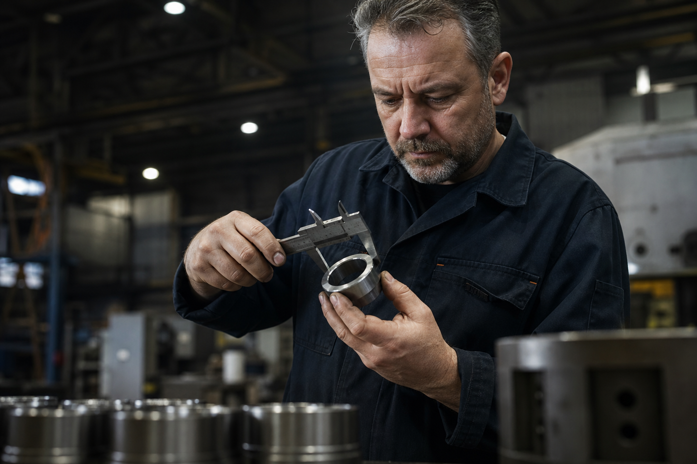

Fraisage 5 axes
Poche complexe, surfacage finition Ra 0,8 — à partir de 185 € HT / heure machine (démo).

Pièces unitaires et petites séries — délais et tarifs d’exemple pour portfolio.
Demander une étude (fictif)Matières : acier 42CrMo4, inox 316L, aluminium 7075 — références inventées.
Poche complexe, surfacage finition Ra 0,8 — à partir de 185 € HT / heure machine (démo).
Ø max 420 mm fictif — barres et flasques — 95 € HT / heure.
Rapport PDF + nuage de points — 120 € HT / pièce simple (exemple).
| Lot | Détail | Budget type |
|---|---|---|
| 10 flasques usinées | Inox, fraisage + polissage | 2 400 – 2 900 € HT |
| Prototype arbre cannelé | Traitement thermique inclus (démo) | 1 100 € HT |
| Série 250 pièces | Alu, cycle automatisé | 8 € HT / pièce |
« Délai prototype 22 h respecté sur notre vilebrequin démo. BE intégré très pro. »
« Série 250 pièces nickel. Communication planning pourrait être + fréquente — retour maquette. »
Z.I. des Charmes, 54000 Ville-Industrie-Démo · contact@mecano-precision54-demo.local
Section supplémentaire pour desktop : image large, texte en colonnes sur XL, vocabulaire technique inventé.

Nous simulons un contrôle sur bride moteur : plan de palpage 42 points, tolérance géométrique sur diamètre fictif, compensation thermique pièce/machine, graphique SPC sur cinq derniers lots, commentaire automatique « process sous contrôle », signature du contrôleur « L.M. », cachet numérique, QR code vers archive introuvable, annexe photos huit vues, glossaire des abréviations Cp Cpk Pp Ppk inventées pour la démo.
Paragraphe additionnel pour allonger : EPI obligatoires, consignes levée, cariste certificat CACES démo, rack palettes Europe, chariot élévateur orange, ligne jaune au sol, extincteur CO2, porte coupe-feu, alarme sonore test mensuel, registre sécurité rempli au crayon, stylo rouge pour les anomalies, café dans un gobelet réutilisable marron.